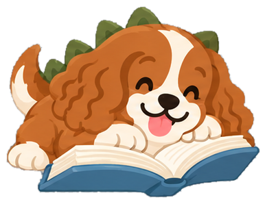

✦
♥


Comida de verdade para cada Monstrinho.

A matilha começa aqui
Cadastre seu primeiro aumigo para prepararmos uma receita feita para ele.
Nova Monstrinha na matilha
Já guardei tudo o que preciso para ajudar vocês nas próximas fornalhas.
Bom te ver de novo
Escolha os ingredientes e a gente calcula as quantidades.
Separe os ingredientes antes de começar. A fornalha fica bem mais tranquila.
A fornalha da Mel começa aqui
Da escolha dos ingredientes à porção no potinho, o Papazilla calcula tudo para vocês.
Quantidades personalizadasPeso, rotina e objetivo entram no cálculo.
Receita pronta para cozinharIngredientes, suplemento, finalização e preparo.
Toda a matilha organizadaReceitas salvas e histórico de fornalhas.
Pagamento anual antecipado. A assinatura renova por mais 12 meses até você cancelar a renovação.
Renovação anual automática. Você pode cancelar a próxima renovação a qualquer momento.
Seu espaço
flavia@exemplo.com
Humana da Mel e do BentoCadastre seus pets e explore os conteúdos. Assine para criar receitas personalizadas.
Papazilla · versão de protótipo
Seu plano
Receitas personalizadas para toda a matilha, salvas e disponíveis em qualquer aparelho.
Acesso liberadoContinue criando e salvando receitas até o fim do período contratado.
Renovação automáticaA próxima cobrança anual acontece na data indicada acima.
O cancelamento evita a próxima renovação. Seu acesso e eventuais pagamentos do período contratado continuam até o final.
Pets
2 cães cadastrados
Cada focinho, uma medidaO perfil de cada cão guarda seus próprios dados, respostas e recomendações.
Sem raça definida · Fêmea · Castrada
De relance
Saúde, rotina, digestão e preferências de Mel.
Atualizada hojePerfil de Mel
Mantenha esses dados atualizados para que as próximas receitas usem o perfil certo.
Perfil em dia
Estas respostas ajudam a personalizar a experiência e sinalizar quando é importante conversar com o veterinário.
ObjetivoMelhorar a qualidade da alimentação
Condição corporalCorpo proporcional, com cintura visível
Mudança de pesoFicou praticamente igual
Atividade40 a 60 minutos por dia
ApetiteCome normalmente
Refeições2 por dia
Condições diagnosticadasNenhuma
FezesFirmes e bem formadas
Medicamentos contínuosNão
ProteínasFrango, carne bovina e ovo
FavoritosCenoura, abóbora e brócolis
EvitarNenhum alimento informado
Descobertas do Zilla
Informação confiável para cozinhar e cuidar com mais segurança.

Preparo · USDA
Organizar a fornalha em porções menores ajuda a comida a esfriar mais rápido e facilita a rotina dos próximos dias.
Alimentos perecíveis devem ser refrigerados em até duas horas depois do preparo. Em dias muito quentes, acima de aproximadamente 32 °C, esse intervalo cai para uma hora.
Distribua a comida em recipientes rasos e bem fechados. Uma panela grande demora mais para esfriar e pode permanecer por mais tempo em uma faixa favorável ao crescimento de bactérias.
Marque a data do preparo antes de guardar. Se o alimento apresentar odor ou aparência incomum, descarte e não ofereça ao pet.
Fonte consultadaUSDA Food Safety and Inspection ServiceAtualizada em 8 set. 2026 no Papazilla↗Sua cozinha
3 receitas na sua coleção
A preferida da Mel
Frango, batata-doce, cenoura, brócolis e fígado.
Peito de frango980 g cru
Batata-doce915 g crua
Cenoura325 g crua
Brócolis325 g cru
Fígado de frango135 g cru
Food Dog Adulto2,6 g por dia≈ 1,3 g/refeição
Óleo vegetalAzeite, coco ou linhaça dourada1 col. sobremesa/dia
Óleo de peixe ou krillDiária ou 3× por semana; dispensável com peixe fresco 2–3×/semana1 cápsula de 1 g
Sal integralUsar muito pouco em cada refeiçãoDose individual
Passo a passo para esta combinação. Os tempos consideram cortes pequenos e são aproximados.
Lave as mãos por 20 segundos. Separe tábua e faca usadas na carne crua, não lave o frango e pese todos os ingredientes ainda crus.
Frango em cubos de 2–3 cm; fígado em pedaços de 1,5–2 cm; batata-doce e cenoura em cubos de 1,5–2 cm; brócolis em floretes pequenos.
Cozinhe cada grupo separadamente, em água ou no vapor. Não use cebola, alho, molhos ou temperos prontos.
Meça no centro da parte mais espessa. Cor e tempo sozinhos não confirmam um cozimento seguro.
Desfie ou pique o frango depois de cozido. Misture até os ingredientes ficarem bem distribuídos; não ofereça a comida quente.
Monte 7 porções diárias de 320 g ou 14 refeições de 160 g. Use recipientes rasos, limpos e identificados com a data.
Adicione suplemento, óleos e qualquer dose individual indicada à porção já fria ou morna. Não tempere a receita por conta própria.
Refrigere em até 2 horas e use as porções refrigeradas em 3–4 dias. Congele o restante e descongele dentro da geladeira.
*Estimativa para cubos de 2–3 cm em fervura suave. Quantidade, panela e fogão alteram o tempo; o termômetro define o ponto seguro.
Histórico
Receita preparada
Guarde a foto e a reação da matilha. Esse preparo entra no histórico da receita.